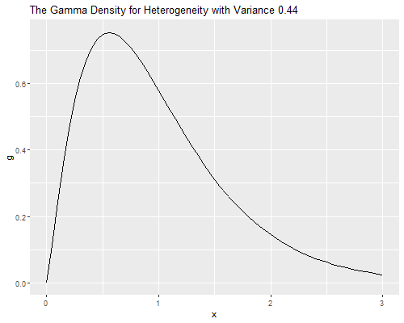
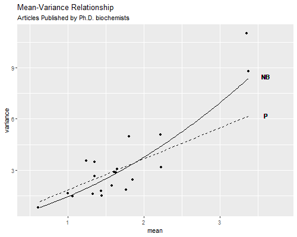

We use data from Long (1990) on the number of publications produced by Ph.D. biochemists to illustrate the application of Poisson, over-dispersed Poisson, negative binomial and zero-inflated Poisson models.
The variables in the dataset are
| Variable | Description |
|---|---|
art |
articles in last three years of Ph.D. |
fem |
coded one for females |
mar |
coded one if married |
kid5 |
number of children under age six |
phd |
prestige of Ph.D. program |
ment |
articles by mentor in last three years |
These data have also been analyzed by Long and Freese (2006), and are available from the Stata website:
> library(haven)
> ab <- read_dta("https://www.stata-press.com/data/lf2/couart2.dta")
> names(ab)[1] "art" "fem" "mar" "kid5" "phd" "ment"> r <- c(mean(ab$art), var(ab$art))
> c(mean=r[1], var=r[2], ratio=r[2]/r[1]) mean var ratio
1.692896 3.709742 2.191358 The mean number of articles is 1.69 and the variance is 3.71, a bit more than twice the mean. The data are over-dispersed, but of course we haven’t considered any covariates yet.
Let us fit the model used by Long and Freese (2006), a simple additive model using all five predictors.
> mp <- glm(art~fem+mar+kid5+phd+ment, family=poisson, data=ab)
> summary(mp)
Call:
glm(formula = art ~ fem + mar + kid5 + phd + ment, family = poisson,
data = ab)
Deviance Residuals:
Min 1Q Median 3Q Max
-3.5672 -1.5398 -0.3660 0.5722 5.4467
Coefficients:
Estimate Std. Error z value Pr(>|z|)
(Intercept) 0.304617 0.102981 2.958 0.0031 **
fem -0.224594 0.054613 -4.112 3.92e-05 ***
mar 0.155243 0.061374 2.529 0.0114 *
kid5 -0.184883 0.040127 -4.607 4.08e-06 ***
phd 0.012823 0.026397 0.486 0.6271
ment 0.025543 0.002006 12.733 < 2e-16 ***
---
Signif. codes: 0 '***' 0.001 '**' 0.01 '*' 0.05 '.' 0.1 ' ' 1
(Dispersion parameter for poisson family taken to be 1)
Null deviance: 1817.4 on 914 degrees of freedom
Residual deviance: 1634.4 on 909 degrees of freedom
AIC: 3314.1
Number of Fisher Scoring iterations: 5We see that the model obviously doesn’t fit the data. The five-percent critical value for a chi-squared with 909 d.f. is
> qchisq(0.95, df.residual(mp))[1] 980.2518> deviance(mp)[1] 1634.371> pr <- residuals(mp, "pearson")
> sum(pr^2)[1] 1662.547and the deviance and Pearson’s chi-squared are both in the 1600s.
We now assume that the variance is proportional rather than equal to the mean, and estimate the scale parameter \(\phi\) dividing Pearson’s chi-squared by its d.f.:
> phi <- sum(pr^2)/df.residual(mp)
> round(c(phi, sqrt(phi)), 4)[1] 1.8290 1.3524We see that the variance is about 83% larger than the mean. This means that we should adjust the standard errors multiplying by 1.35, the square root of 1.83.
R can do this calculation for us if we use the
quasipoisson family:
> mq <- glm(art~fem+mar+kid5+phd+ment, family=quasipoisson, data=ab)
> summary(mq)
Call:
glm(formula = art ~ fem + mar + kid5 + phd + ment, family = quasipoisson,
data = ab)
Deviance Residuals:
Min 1Q Median 3Q Max
-3.5672 -1.5398 -0.3660 0.5722 5.4467
Coefficients:
Estimate Std. Error t value Pr(>|t|)
(Intercept) 0.304617 0.139273 2.187 0.028983 *
fem -0.224594 0.073860 -3.041 0.002427 **
mar 0.155243 0.083003 1.870 0.061759 .
kid5 -0.184883 0.054268 -3.407 0.000686 ***
phd 0.012823 0.035700 0.359 0.719544
ment 0.025543 0.002713 9.415 < 2e-16 ***
---
Signif. codes: 0 '***' 0.001 '**' 0.01 '*' 0.05 '.' 0.1 ' ' 1
(Dispersion parameter for quasipoisson family taken to be 1.829006)
Null deviance: 1817.4 on 914 degrees of freedom
Residual deviance: 1634.4 on 909 degrees of freedom
AIC: NA
Number of Fisher Scoring iterations: 5The estimates are exactly the same as before, but the standard errors are about 35% larger. We have essentially attributed all lack of fit to pure error. We can verify this fact easily. First we write a useful function to extract standard errors and then use it on our fits:
> se <- function(model) sqrt(diag(vcov(model)))
> round(data.frame(p=coef(mp), q=coef(mq),
+ se.p=se(mp), se.q=se(mq), ratio=se(mq)/se(mp)), 4) p q se.p se.q ratio
(Intercept) 0.3046 0.3046 0.1030 0.1393 1.3524
fem -0.2246 -0.2246 0.0546 0.0739 1.3524
mar 0.1552 0.1552 0.0614 0.0830 1.3524
kid5 -0.1849 -0.1849 0.0401 0.0543 1.3524
phd 0.0128 0.0128 0.0264 0.0357 1.3524
ment 0.0255 0.0255 0.0020 0.0027 1.3524An alternative approach is to fit a Poisson model and use the robust or sandwich estimator of the standard errors. This usually gives results very similar to the over-dispersed Poisson model.
We now fit a negative binomial model with the same predictors. To do
this we need the glm.nb() function in the MASS
package.
> library(MASS)Warning: package 'MASS' was built under R version 4.2.2
Attaching package: 'MASS'The following object is masked from 'package:dplyr':
select> mnb <- glm.nb(art ~ fem + mar + kid5 + phd + ment, data = ab)
> summary(mnb)
Call:
glm.nb(formula = art ~ fem + mar + kid5 + phd + ment, data = ab,
init.theta = 2.264387695, link = log)
Deviance Residuals:
Min 1Q Median 3Q Max
-2.1678 -1.3617 -0.2806 0.4476 3.4524
Coefficients:
Estimate Std. Error z value Pr(>|z|)
(Intercept) 0.256144 0.137348 1.865 0.062191 .
fem -0.216418 0.072636 -2.979 0.002887 **
mar 0.150489 0.082097 1.833 0.066791 .
kid5 -0.176415 0.052813 -3.340 0.000837 ***
phd 0.015271 0.035873 0.426 0.670326
ment 0.029082 0.003214 9.048 < 2e-16 ***
---
Signif. codes: 0 '***' 0.001 '**' 0.01 '*' 0.05 '.' 0.1 ' ' 1
(Dispersion parameter for Negative Binomial(2.2644) family taken to be 1)
Null deviance: 1109.0 on 914 degrees of freedom
Residual deviance: 1004.3 on 909 degrees of freedom
AIC: 3135.9
Number of Fisher Scoring iterations: 1
Theta: 2.264
Std. Err.: 0.271
2 x log-likelihood: -3121.917 > 1/mnb$theta[1] 0.4416205> -2*(logLik(mp) - logLik(mnb))'log Lik.' 180.196 (df=6)R’s theta is the precision of the multiplicative random
effect, and corresponds to 1/σ2 in the notes. The estimate
corresponds to an estimated variance of 0.44 and is highly
significant.
To test the significance of this parameter you may think of computing twice the difference in log-likelihoods between this model and the Poisson model, 180.2, and treating it as a chi-squared with one d.f. The usual asymptotics do not apply, however, because the null hypothesis is on a boundary of the parameter space.
There is some work showing that a better approximation is to treat the statistic as as 50:50 mixture of zero and a chi-squared with one d.f. Alternatively, treating the statistic as a chi-squared with one d.f. gives a conservative test. Either way, we have overwhelming evidence of overdispersion.
For testing hypotheses about the regression coefficients we can use either Wald tests or likelihood ratio tests, which are possible because we have made full distributional assumptions.
There’s also a negative.binomial family for
glm and this can be used provided the parameter
theta is given. (This is based on the result that the
negative binomial is in the glm family for fixed variance.) Here’s a
quick check:
> mnbg <- glm(art~fem+mar+kid5+phd+ment,
+ family=negative.binomial(mnb$theta), data=ab)
> all(abs(coef(mnb)-coef(mnbg)) < 1e-5)[1] TRUEThe standard errors would differ, however, because
glm.nb allows for the fact that theta was
estimated, whereas glm does not.
Let us draw the density of the parameter representing unobserved
heterogeneity. R has a function
dgamma(x, shape, rate = 1, scale = 1/rate) to compute the
density of a gamma distribution with given shape and scale (or its
reciprocal the rate). In particular, when the random effect has variance
v the density is
dgamma(x, shape = 1/v, scale = v).
> library(ggplot2)
> v = 1/mnb$theta
> x = seq(0, 3, 0.05)
> gd = data.frame(x, g = dgamma(x, shape = 1/v, scale = v))
> png("gamdenr.png", width=500, height=400)
> ggplot(gd, aes(x, g)) + geom_line() +
+ ggtitle("The Gamma Density for Heterogeneity with Variance 0.44")
> dev.off()png
2 
We can also compute quantiles using
qgamma(p, shape, rate = 1, scale = 1/rate, lower.tail = TRUE).
In our case the shape is 1/v and the scale is
v.
> qgamma((1:3)/4, shape = 1/v, scale = v)[1] 0.5114167 0.8572697 1.3347651Biochemists at Q1 of the distribution of unobserved heterogeneity publish 49% fewer papers than expected from their observed characteristics, while those at the median publish 14% fewer and those at Q3 publish 33% more than expected.
Let us compare parameter estimates and standard errors under the Poisson, over-dispersed Poisson and negative binomial models:
> round(data.frame(
+ p=coef(mp),q=coef(mq),nb=coef(mnb),
+ se.p=se(mp),se.q=se(mq),se.nb=se(mnb)),4) p q nb se.p se.q se.nb
(Intercept) 0.3046 0.3046 0.2561 0.1030 0.1393 0.1373
fem -0.2246 -0.2246 -0.2164 0.0546 0.0739 0.0726
mar 0.1552 0.1552 0.1505 0.0614 0.0830 0.0821
kid5 -0.1849 -0.1849 -0.1764 0.0401 0.0543 0.0528
phd 0.0128 0.0128 0.0153 0.0264 0.0357 0.0359
ment 0.0255 0.0255 0.0291 0.0020 0.0027 0.0032The negative binomial estimates are not very different from those based on the Poisson model, and both sets would led to the same conclusions.
Looking at the standard errors, we see that both approaches to over-dispersion lead to very similar estimated standard errors, and that ordinary Poisson regression underestimates the standard errors.
We can assess the goodness of fit of the negative binomial model by using the deviance.
> deviance(mnbg)[1] 1004.281The negative binomial model fits better than the Poisson, but still has a deviance above the five percent critical value of 980.25.
The over-dispersed Poisson and negative binomial models have different variance functions. One way to check which one may be more appropriate is to create groups based on the linear predictor, compute the mean and variance for each group, and finally plot the mean-variance relationship.
Here are groups based on the negative binomial linear predictor,
created using cut() with breaks at the (5(5)95
percentiles to produce twenty groups of approximately equal size. Note
that predict() computes a linear predictor, unless
otherwise specified. To predict in the scale of the response add the
option type="response".
> library(dplyr)
> xb <- predict(mnb)
> q <- c(min(xb)-0.1, quantile(xb, seq(5,95,5)/100), max(xb)+0.1)
> ab <- mutate(ab, group=cut(xb, breaks=q))
> mv <- group_by(ab,group) |> summarize(mean=mean(art), variance=var(art), n=n())
> x <- seq(0.63, 3.37, 0.02)
> g <- data.frame( mean = x, poisson = x * phi, negbin = x * (1 + x/mnb$theta))
> png("c4afig1r.png", width=500, height=400)
> ggplot(mv, aes(x=mean, y=variance)) + geom_point() + xlim(0.5, 3.8) +
+ geom_line(data=g, aes(x=mean, y=poisson) , linetype="dashed") +
+ geom_line(data=g, aes(x=mean, y=negbin), linetype="solid") +
+ ggtitle("Mean-Variance Relationship",
+ subtitle = "Articles Published by Ph.D. biochemists") +
+ geom_text(x=3.6, y=6.2, label="P") + geom_text(x=3.6, y=8.5, label="NB")
> dev.off()png
2 
The graph plots the mean versus the variance and overlays the curves corresponding to the over-dispersed Poisson model, where the variance is \(\phi\mu\), and the negative binomial model, where the variance is \(\mu(1+\mu\sigma^2)\).
The Poisson variance function does a pretty good job for the bulk of the data, but fails to capture the high variances of the most productive scholars. The negative binomial variance function is not too different but, being a quadratic, can rise faster and does a better job at the high end. We conclude that the negative binomial model provides a better description of the data than the over-dispersed Poisson model.
A frequent occurrence with count data is an excess of zeroes compared to what’s expected under a Poisson model. This is actually a problem with our data:
> zobs <- ab$art == 0
> zpoi <- exp(-exp(predict(mp))) # or dpois(0,exp(predict(mp)))
> c(obs=mean(zobs), poi=mean(zpoi)) obs poi
0.3005464 0.2092071 We see that 30.0% of the scientists in the sample published no articles in the last three years of their Ph.D., but the Poisson model predicts that only 20.9% would have no publications. Clearly the model underestimates the probability of zero counts.
One way to model this type of situation is to assume that the data come from a mixture of two populations, one where the counts is always zero, and another where the count has a Poisson distribution with mean \(\mu\). In this model zero counts can come from either population, while positive counts come only from the second one.
In the context of publications by Ph.D. biochemists, we can imagine that some had in mind jobs where publications wouldn’t be important, while others were aiming for academic jobs where a record of publications was expected. Members of the first group would publish zero articles, whereas members of the second group would publish 0,1,2,…, a count that may be assumed to have a Poisson distribution.
The distribution of the outcome can then be modeled in terms of two parameters, \(\pi\) the probability of “always zero”, and \(\mu\), the mean number of publications for those not in the “always zero” group. A natural way to introduce covariates is to model the logit of the probability \(\pi\) of always zero and the log of the mean \(\mu\) for those not in the always zero class.
This type of model can be fit in R using the zeroinfl()
function in the pscl package. The model formula can be
specified as usual if the same variables are to be included in both
equations. Otherwise one can provide two sets of predictors separated by
a vertical bar, type ?zeroinfl to learn more.
Here’s a zero-inflated model with all covariates in both equations:
> library(pscl)Classes and Methods for R developed in the
Political Science Computational Laboratory
Department of Political Science
Stanford University
Simon Jackman
hurdle and zeroinfl functions by Achim Zeileis> mzip <- zeroinfl(art ~ fem + mar + kid5 + phd + ment, data=ab)
> summary(mzip)
Call:
zeroinfl(formula = art ~ fem + mar + kid5 + phd + ment, data = ab)
Pearson residuals:
Min 1Q Median 3Q Max
-2.3253 -0.8652 -0.2826 0.5404 7.2976
Count model coefficients (poisson with log link):
Estimate Std. Error z value Pr(>|z|)
(Intercept) 0.640839 0.121307 5.283 1.27e-07 ***
fem -0.209144 0.063405 -3.299 0.000972 ***
mar 0.103750 0.071111 1.459 0.144567
kid5 -0.143320 0.047429 -3.022 0.002513 **
phd -0.006166 0.031008 -0.199 0.842376
ment 0.018098 0.002294 7.888 3.07e-15 ***
Zero-inflation model coefficients (binomial with logit link):
Estimate Std. Error z value Pr(>|z|)
(Intercept) -0.577060 0.509386 -1.133 0.25728
fem 0.109752 0.280082 0.392 0.69517
mar -0.354018 0.317611 -1.115 0.26501
kid5 0.217095 0.196483 1.105 0.26920
phd 0.001275 0.145263 0.009 0.99300
ment -0.134114 0.045243 -2.964 0.00303 **
---
Signif. codes: 0 '***' 0.001 '**' 0.01 '*' 0.05 '.' 0.1 ' ' 1
Number of iterations in BFGS optimization: 19
Log-likelihood: -1605 on 12 DfLooking at the inflate equation we see that the only significant predictor of being in the “always zero” class is the number of articles published by the mentor, with each article by the mentor associated with 12.6% lower odds of never publishing.
Looking at the equation for the mean number or articles among those not in the always zero class, we find significant disadvantages for females and scientists with children under five, and a large positive effect of the number of publications by the mentor, with each article associated with a 1.8% increase in the expected number of publications.
To verify that the model solves the problem of excess zeroes we
predict \(\pi\) and \(\mu\), and calculate the combined
probability of no publications. There are options in the
predict() function called "zero" and
"count" to obtain these. There’s also an option
"prob" to compute the predicted density, but this is
overkill, as we only want the probability of zero.
> pr <- predict(mzip,type="zero") # pi
> mu <- predict(mzip,type="count") # mu
> zip <- pr + (1-pr)*exp(-mu) # or predict(mzip,type="prob")[,1]
> mean(zip)[1] 0.2985679So the model solves the problem of excess zeroes, predicting that 29.9% of the biochemists will publish no articles, extremely close to the observed value of 30.0%.
There’s also a zero-inflated negative binomial model, which uses a
negative binomial for the count in the “not always zero” class. This
model can be fit using zeroinfl() with the
dist="negbin" parameter. Alternative links for the inflate
equation include the probit, which can be specified using
link="probit".
As it happens, for this data the negative binomial solves the problem of zeroes too! Here’s the probability of zero articles in the negative binomial. We proceed from first principles, but one could also use the built-in negative binomial density
> munb <- exp(predict(mnb))
> theta <- mnb$theta
> znb <- (theta/(munb+theta))^theta
> # also dnbinom(0, mu=munb, size=theta)
> mean(znb)[1] 0.3035957The model predicts that 30.4% of the biochemists would publish no articles in the last three years of their Ph.D., very close to the observed value of 30.0%.
To choose between the negative binomial and zero inflated models we need to resort to other criteria. A very simple way to compare models with different numbers of parameters is to compute Akaike’s Information Criterion (AIC), which we define as
AIC = -2logL + 2p
where p is the number of parameters in the model. The first term is
essentially the deviance and the second a penalty for the number of
parameters. I will obtain it “by hand” so we see exactly what’s going
on. AIC may also be calculated using the AIC()
function.
> c(nb = AIC(mnb), zip = AIC(mzip)) nb zip
3135.917 3233.546 > mzip$rank <- length(coef(mzip)) # add a rank component
> aic <- function(model) -2*logLik(model) + 2*model$rank
> sapply(list(mnb, mzip), aic)[1] 3133.917 3233.546For this dataset the negative binomial model is a clear winner in terms of parsimony and goodness of fit.
Additional diagnostic criteria we could look at are the marginal distribution of predicted and observed counts, and the variance functions.
Other models we haven’t covered are the zero-truncated Poisson and negative binomial, designed for data that do not include zeroes. A common example is length of stay in a hospital, which is at least one day. A sensible approach is to fit a Poisson or negative binomial model that excludes zero and rescales the other probabilities to sum to one.
One should be careful interpreting these models because \(\mu\) is not the expected outcome, but the
mean of an underlying distribution that includes the zeros. These models
are implemented in the vglm() function in the
VGAM package, using the families pospoisson
and posnegbinomial.
An alternative approach to excess (or a dearth) of zeroes is to use a
two-stage process, with a logit model to distinguish between zero and
positive counts and then a zero-truncated Poisson or negative binomial
model for the positive counts. In our example, we could use a logit
model to differentiate those who publish from those who don’t, and then
a truncated Poisson or negative binomial model for the number of
articles of those who publish at least one. These models are often
called hurdle models. They can be fitted in Stata or R using
the separate logit and zero-truncated Poisson or negative binomial
models, and simply adding the log-likelihoods. They can also be fit in R
using the hurdle() function in the pscl
package.
Comparing hurdle and zero-inflated models, I find the distinction between zero and one or more to be clearer with hurdle models, but the interpretation of the mean is clearer with zero-inflated models.
Long, J.S. (1990). The Origins of Sex Differences in Science. Social Forces, 68:1297-1315.
Long, J.S. and Freese, J. (2006) Regression Models for Categorical Dependent Variables Using Stata. Second Edition. College Station, Texas: Stata Press.
Zeileis, A, Kleiber, C and Jackman, S. (2008). Regression Models for Count Data in R. Journal of Statistical Software, 27(8):1-25. URL https://www.jstatsoft.org/article/view/v027i08.
Updated fall 2022